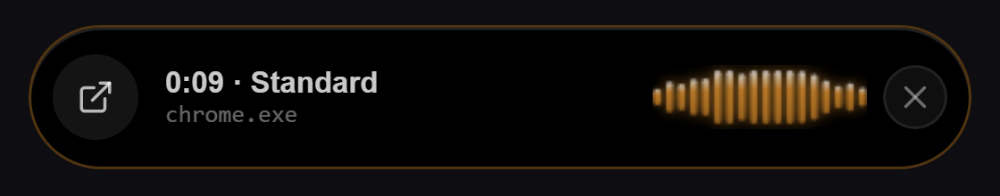

Talk. Ivy writes what you meant.
Hold a key, speak naturally, let go. Clean text appears wherever your cursor is: email, chat, documents, code. Fully offline. Your voice never leaves your computer.
Free. No account, no subscription, no cloud. Runs on any GPU or on the CPU alone.

People change their minds mid-sentence.
Most dictation apps type every word and leave you to fix it. Ivy understands self-corrections and writes the final version, in one pass, with one small model running on your own PC.
Small app. Does a lot.
Hold to talk, or hands-freeHold Alt + Space and speak, or double-tap to dictate up to 5 minutes.
Three tonesCasual for chat, Standard for normal writing, Professional for formal mail. Set a tone per app and Ivy switches by itself.
Numbers the way you type themMoney, times, dates, ₹500, 2.5 crores, 2 million.
Personal dictionary and snippetsTeach it names and jargon. Say a trigger phrase and Ivy types your saved address or signature.
Touch UpOne click fixes spelling after a paste. It never rewrites your sentences.
Gets out of the waySleeps when a game or full-screen video is in front, and moves to the CPU on battery.

Offline means offline.
No internet after setupIvy goes online once, to download its speech model, and after that only when you press Check for updates.
Deleted on scheduleRecordings and transcripts are removed after 24 hours, or up to 7 days if you choose.
Out of your clipboard historyIvy’s pastes stay out of Win + V history and clipboard cloud sync.
Source code publicEvery line is on GitHub, so you can check what it does.
Try it in two minutes.
Windows 10 and 11, or Linux (.deb and .rpm). Or install on Windows with one PowerShell command:
irm https://raw.githubusercontent.com/raj-7676/ivy-dictation/main/install.ps1 | iex